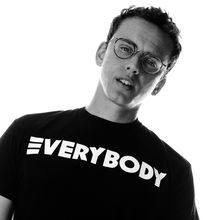

Wubba lubba dub dub
En utav Rick's favorit meningar har äntligen fått en betydelse, enligt Rick's kompis Birdperson ska frasen betyda "I am in great pain, please help me".
Av Rasmus Kauppinen (2018-1-20)

Logic - Noob Noob
Rick har otroligt nog fixat den sjukaste festen när han va full. Han ska tydligen har bjudit in mega artisten Logic att uppträda sin nya låt "Noob Noob" som handlar om Rick's vän.
Av Rasmus Kauppinen (2018-1-20)